22–28 kwietnia 2027
Phoenix → Wielki Kanion → Marble Canyon → Monument Valley → Mesa Verde → Aztec Ruins → Colorado National Monument → Capitol Reef i Torrey → Bryce Canyon → Zion → Las Vegas → Los Angeles
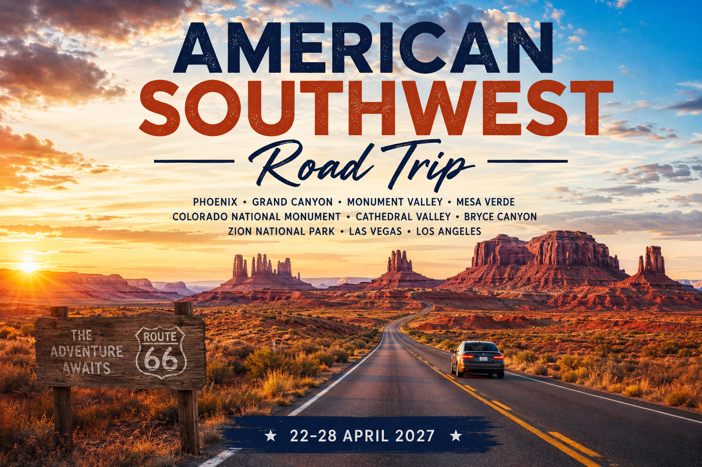
Spis treści
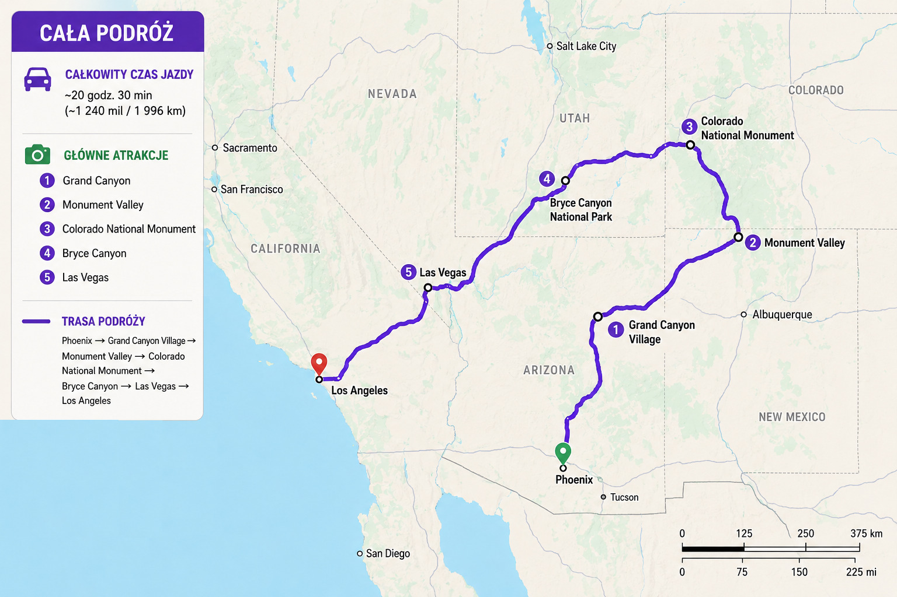
Przegląd
Siedem dni z pustyni Sonora nad Pacyfik, przez sześć stanów i pięć najwspanialszych krajobrazów Wyżyny Kolorado. Cztery spokojne dni na początku, trzy szybkie i przestrzenne dni jazdy na końcu.
| Najważniejsze ustalenia | |
|---|---|
| Termin | czwartek 22 do środy 28 kwietnia 2027 (7 dni, 6 nocy) |
| Miejsce spotkania | lotnisko Phoenix Sky Harbor (PHX) czwartek 22 kwietnia, godz. 14:00, przylatujecie osobno |
| Lotnisko powrotne | Los Angeles International (LAX) środa 28 kwietnia, na lotnisku najpóźniej o 18:30 |
| Lot powrotny | LAX do Londyn Heathrow, godz. 21:30 Virgin Atlantic, klasa Upper Class |
| Samochód | SUV z napędem 4x4, podwyższony prześwit |
| Dystans całkowity | ≈ 1 800 mil / ≈ 2 900 km |
| Czas jazdy | ≈ 32 godziny na odcinkach z mapy Doliczcie ≈ 36 godzin razem z drogami widokowymi wewnątrz parków |
| Cały wyjazd | ≈ 148 godzin, z czego jazda to mniej więcej jedna piąta |
| Karnet do parków | America the Beautiful, roczny karnet dla nierezydentów, 250 $ na pojazd Szczegóły w rozdziale Wstępy i opłaty. Monument Valley nie jest objęte karnetem. |
| 22–23 kwi | Grand Canyon Village / Tusayan, AZ (2 noce) |
| 24 kwi | Monument Valley / Kayenta |
| 25 kwi | Aztec lub Farmington, NM |
| 26 kwi | Torrey, UT |
| 27 kwi | Planet Hollywood Resort & Casino, Las Vegas |
Sześć stanów, dziewięć przekroczeń granic stanowych:
Monument Valley leży dokładnie na granicy Arizony i Utah, a odcinek ze St George do Mesquite przecina 29 mil Arizony w wąwozie Virgin River Gorge. Oba łatwo przeoczyć na mapie.
1. Karnet do parków. Osoby spoza USA nie mogą już kupić zwykłego karnetu rocznego za 80 $. Właściwy jest roczny karnet dla nierezydentów (250 $), który znosi dodatkową opłatę 100 $ od osoby obowiązującą obecnie w Wielkim Kanionie, Bryce Canyon i Zion. Zakup cyfrowy na Recreation.gov pozwala uniknąć czekania na przesyłkę. Karnet jest wystawiany na pojazd, więc jego koszt dzieli się na wszystkich uczestników wyjazdu.
2. Nocleg przy Wielkim Kanionie. Hotele wewnątrz parku na koniec kwietnia zapełniają się zwykle od sześciu do dwunastu miesięcy wcześniej.
3. Wycieczka z przewodnikiem Navajo w Monument Valley, jeśli macie na nią ochotę. Przewodnik pokazuje część parku niedostępną dla odwiedzających na własną rękę.
Rytm tygodnia
Ten plan jest celowo niesymetryczny. Pierwsze cztery dni opierają się na zatrzymaniu w miejscu: długie popołudnia nad krawędzią kanionu, cały dzień bez jazdy, zachód słońca w Monument Valley. Ostatnie trzy dni odwracają proporcje. Krajobraz staje się czymś, przez co się przejeżdża, szybko, z punktem widokowym co dwadzieścia minut.
Dni 1–4
Cztery dni ze średnią poniżej trzech godzin za kierownicą. Dwie noce przy Wielkim Kanionie dają cały dzień bez odcinka przejazdowego. Monument Valley dostaje całe popołudnie i wieczór, a nie postój na jedno zdjęcie. Mesa Verde i Aztec Ruins traktujemy jako cele same w sobie, nie jako przystanki po drodze gdzie indziej.
Około 670 mil i 12 godzin jazdy w cztery dni.
Dni 5–7
Charakter wyjazdu zmienia się w Aztec. Dzień 5 wspina się w góry San Juan jedną z najbardziej efektownych asfaltowych dróg Ameryki Północnej i kończy się na pustyni w Utah. Dzień 6 spina w jeden łuk Bryce, Zion i granicę Nevady. Dzień 7 to dojazd nad ocean, z postojami wybieranymi rano, a nie z góry.
Około 1 130 mil i 20 godzin jazdy w trzy dni.
Poniższe wartości pochodzą z map trasy i są zaokrąglone. To sam czas jazdy, bez postojów, posiłków, zdjęć, tankowania i punktów widokowych. W praktyce odcinek opisany jako trzygodzinny zajmie pięć albo sześć godzin dnia, kiedy zaczniecie się zatrzymywać, i o to właśnie chodzi.
| Dzień | Odcinek | Dystans | Jazda | Charakter |
|---|---|---|---|---|
| 1 | Phoenix → Wielki Kanion, południowa krawędź | 230 mil | 3,5–4 h | Autostrada, podjazd o 6 000 stóp |
| 2 | Wielki Kanion, bez przejazdu | – | – | Dzień nad krawędzią |
| 3 | Wielki Kanion → Monument Valley | 170 mil† | 3 h† | Desert View, Painted Desert |
| 4 · 1 | Monument Valley → Mesa Verde | 183 mile | 3 h 20 min | US-160 przez Naród Navajo |
| 4 · 2 | Mesa Verde → Aztec Ruins | 88 mil | 1 h 45 min | Krótki skok do Nowego Meksyku |
| 5 · 1 | Aztec → Colorado National Monument | 224 mile | 4 h 45 min | Góry San Juan, trzy wysokie przełęcze |
| 5 · 2 | Colorado NM → Torrey | 215 mil | 3 h 30 min | I-70 i UT-24 przez Capitol Reef |
| 6 · 1 | Torrey → Bryce Canyon | 130 mil | 2 h 45 min | Droga widokowa nr 12 |
| 6 · 2 | Bryce Canyon → Zion | 97 mil | 1 h 45 min | Las, potem tunel |
| 6 · 3 | Zion → Las Vegas | 157 mil | 2 h 15 min | I-15, Virgin River Gorge |
| 7 | Las Vegas → LAX | 285–330 mil | 4 h 45 min do 5 h | Przejazd przez Mojave |
† Dane dla dnia 3 dotyczą trasy bezpośredniej przez Tuba City. Wjazd do Marble Canyon przy moście Navajo Bridge to prawdziwy objazd, obie wersje opisuje rozdział Dzień 3.
Czwartek, 22 kwietnia 2027
Spotkanie na Sky Harbor · autostrada I-17 · przyjazd i aklimatyzacja
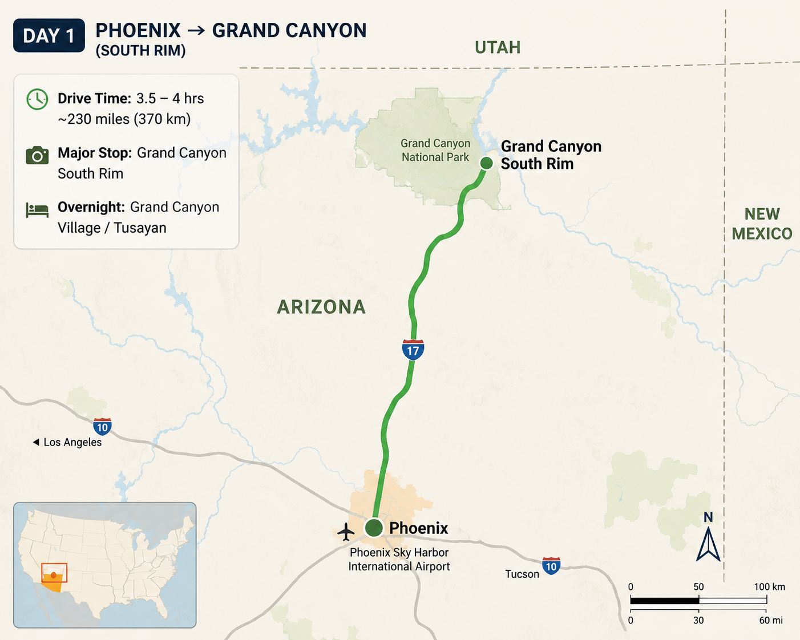
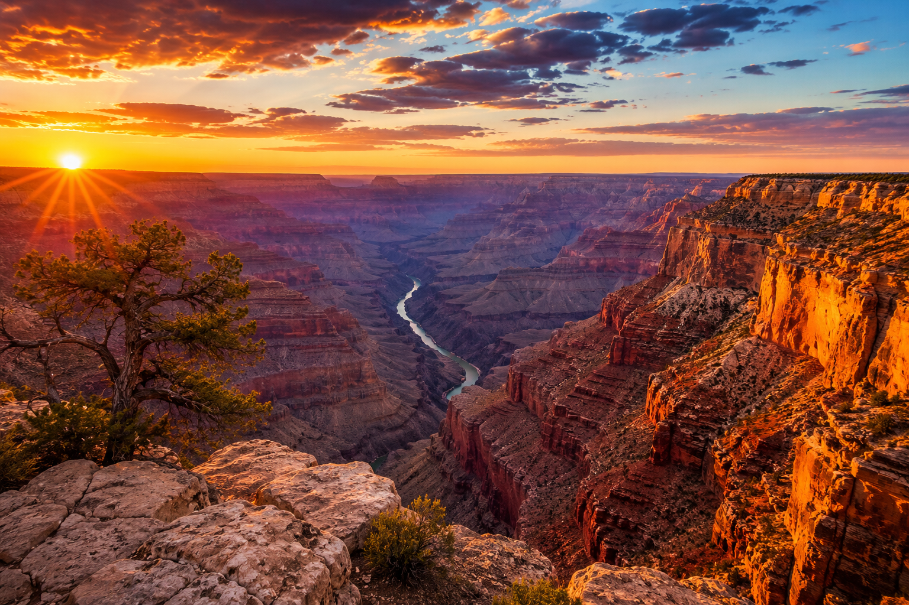
Spotykacie się na Sky Harbor o 14:00 i jedziecie na północ. Między spotkaniem a faktycznym wyjazdem poza teren lotniska warto założyć czterdzieści pięć minut do godziny na odbiór i załadowanie samochodu. To oznacza wjazd na I-17 około 15:00 i przyjazd nad kanion między 18:30 a 19:00.
Jak na autostradę, ten przejazd jest naprawdę ładny: pustynia z saguaro przechodzi w wysokie zarośla, a potem w sosnowy las na skarpie Mogollon, gdy wspinacie się z 1 100 stóp w Phoenix do 7 000 stóp w Grand Canyon Village. To 6 000 stóp podjazdu w trzy godziny, więc po wyjściu z auta będzie od piętnastu do dwudziestu stopni chłodniej.
To celowo nie jest dzień zwiedzania. Jeśli czas pozwoli, możecie złapać ostatnie światło przy Mather Point, pięć minut spacerem od parkingu przy centrum informacji, ale kanion nigdzie nie ucieknie, a jutro należy w całości do Was. Kolacja, sen, aklimatyzacja.
Strefa czasowa: Arizona nie zmienia czasu na letni. Pod koniec kwietnia cały stan chodzi według tego samego zegara co Kalifornia, więc dziś nie przestawiacie zegarków ani nie zrobicie tego aż do Monument Valley.
Paliwo: tankujcie we Flagstaff. Stacje są też w Tusayan i przy Desert View, ale to najdroższe paliwo na całej trasie.
Karnet: przy południowej bramie można odebrać lub zweryfikować karnet roczny, jeśli nie kupiliście go cyfrowo.
Warstwy ubrań: pod koniec kwietnia nocne minima nad krawędzią schodzą w okolice zera, czyli mniej więcej 15°C w dzień i minus 1°C w nocy.
Piątek, 23 kwietnia 2027 · bez przejazdu
Wschód 5:46 · zachód 19:08 · trzynaście godzin światła i żadnego harmonogramu
Jedyny dzień tygodnia bez mapy, bez czasu przejazdu i bez godziny przyjazdu. Poniżej znajdziecie propozycje, a nie plan. Kanion odwdzięcza się za spokojne siedzenie w miejscu znacznie bardziej niż za odhaczanie listy.
| Gdzie | Co daje | Czas |
|---|---|---|
| Mather Point | Klasyczny pierwszy widok, przy głównym centrum informacji. Największy tłok między 10:00 a 16:00. | 30 min |
| Yavapai Point i muzeum geologii | Okna od podłogi do sufitu nad kanionem i najjaśniejsze wyjaśnienie tego, na co patrzycie. | 45–60 min |
| Grand Canyon Village | El Tovar, Hopi House, Lookout Studio, Kolb Studio, czyli historyczne serce południowej krawędzi. | 1–2 h |
| Rim Trail | Utwardzona i w większości płaska ścieżka wzdłuż krawędzi. Przejść odcinek, wrócić autobusem, na tym polega sztuczka. | Dowolnie |
| Hermit Road (czerwona linia) | Dziewięć punktów widokowych na zachód: Hopi, Mohave, Pima, Hermits Rest. Najlepsze światło na południowej krawędzi. | 2–3 h |
| Desert View Drive | 25 mil na wschód do wieży Watchtower, dostępne dla samochodów prywatnych. Lepiej zostawić na jutro rano, bo leży na Waszej trasie. | – |
Hermit Road od 1 marca do 30 listopada obsługują wyłącznie autobusy parkowe. Samochody prywatne nie mają wjazdu. Bezpłatna czerwona linia rusza z przystanku Village Route Transfer, pełna pętla bez wysiadania zajmuje około 80 minut, a pierwszy kurs jest mniej więcej o 8:00. Yaki Point i początek szlaku South Kaibab są zamknięte dla samochodów przez cały rok, dojeżdża tam pomarańczowa linia Kaibab Rim.
Rim Trail to oczywisty wybór: trzynaście mil od końca do końca, ale można wejść na niego i zejść z niego przy niemal każdym przystanku autobusu. Odcinek od Powell Point do Monument Creek Vista jest utwardzony, cichy i spektakularny.
Zejście poniżej krawędzi to zupełnie inna historia. Bright Angel Trail do schroniska na 1,5 mili i z powrotem to sensowne pół dnia (3 mile, około 1 100 stóp podejścia w drodze powrotnej). Pamiętajcie, że każdy krok w dół trzeba potem wejść pod górę, na wysokości, a powrót zajmuje mniej więcej dwa razy dłużej niż zejście. Pod koniec kwietnia w głębi kanionu jest już 14–17°C cieplej niż na krawędzi.
Wschód słońca o 5:46, zachód o 19:08. Na wschód najlepsze są Mather Point i Yavapai Point, zwrócone na wschód i położone blisko hoteli. Na zachód tradycyjnie wybiera się Hopi Point i Pima Point przy Hermit Road. Autobusy jeżdżą mniej więcej do godziny po zachodzie, więc można zostać do końca kolorów bez ryzyka, że utkniecie.
Północna krawędź jest zamknięta. Otwiera się dopiero 15 maja, więc w tym wyjeździe nie wchodzi w grę. Wszystko, co przeczytacie o punktach widokowych North Rim, dotyczy innego terminu.
Pogoda. Koniec kwietnia na wysokości 7 000 stóp bywa nieprzewidywalny. Śnieg jest możliwy. Spodziewajcie się około 15°C w dzień, okolic zera o świcie i wiatru nad krawędzią.
Kondory. Kondory kalifornijskie regularnie pojawiają się rano nad Lookout Studio i początkiem szlaku Bright Angel. Wypatrujcie numerowanych znaczników na skrzydłach.
Sobota, 24 kwietnia 2027
Desert View · Painted Desert · popołudnie i wieczór wśród ostańców
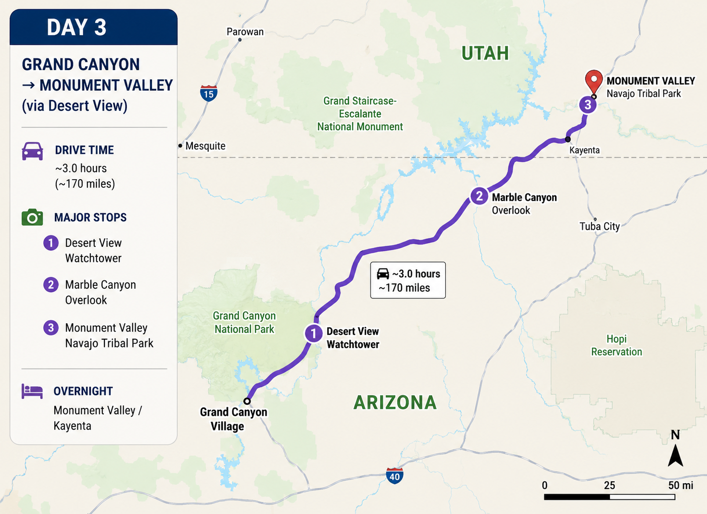
Dystans i czas z mapy (170 mil, 3 godziny) odpowiadają trasie bezpośredniej: Desert View, Cameron, Tuba City, Kayenta, Monument Valley.
Marble Canyon, czyli Navajo Bridge, gdzie droga US-89A przecina rzekę Kolorado 470 stóp nad wodą, leży na północny zachód, przy US-89 za Bitter Springs. Porządne zwiedzenie mostu i dalsza jazda do Monument Valley przez Page dokłada mniej więcej 140 mil i 2,5 do 3 godzin, co daje dzień z około 320 milami i 6 godzinami jazdy.
Obie wersje są dobre, tyle że zupełnie inne. Wariant A chroni długie popołudnie w Monument Valley, wokół którego zbudowany jest ten plan. Wariant B wymienia część tego popołudnia na Navajo Bridge, Lees Ferry, klify Vermilion i możliwość zobaczenia Horseshoe Bend przy Page.
Desert View, Cameron, Tuba City, Kayenta, Monument Valley. ≈ 180 mil, 3,5 godziny. Wyjazd o 8:30, godzina przy wieży Watchtower, punkt widokowy nad wąwozem Little Colorado koło Cameron, obiad w Tuba City i jesteście przy bramie parku plemiennego około 14:30 czasu lokalnego, z sześcioma godzinami światła przed sobą.
Marble Canyon można zobaczyć z daleka i z góry przy innej okazji albo zastąpić go wąwozem Little Colorado, który jest naprawdę imponujący i leży dokładnie przy trasie.
Desert View, Cameron, Bitter Springs, Navajo Bridge, powrót do Bitter Springs, Page, Kayenta, Monument Valley. ≈ 320 mil, 6 godzin. Wyjazd najpóźniej o 7:30.
Dojechalibyście około 17:00–18:00, wciąż na zachód słońca nad ostańcami, ale bez czasu na Valley Drive czy wycieczkę z przewodnikiem tego dnia. Przy tym wariancie warto rozważyć poranną wycieczkę w dniu 4, przed wyjazdem.
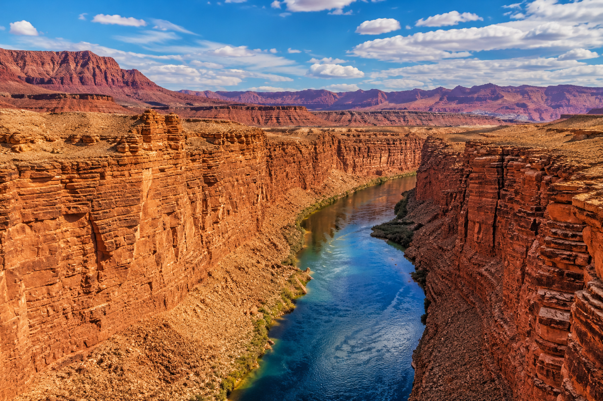
Desert View Watchtower (25 mil na wschód od Village, wciąż w parku) to naturalny pierwszy postój i ostatni widok Wielkiego Kanionu, jaki dostaniecie. Ze szczytu widać rzekę Kolorado, Painted Desert, a przy dobrej pogodzie także górę Navajo Mountain 90 mil na północ.
Za wschodnią bramą droga opada w Painted Desert, czyli pasiaste pustkowia w odcieniach szarości, fioletu i rdzy. Przy zatoczkach stoją stragany z biżuterią Navajo. Zakup bezpośrednio od twórcy jest i tańszy, i ciekawszy niż sklepy z pamiątkami.
Na północ od Kayenty droga US-163 serwuje widok, który zna każdy: Mittens i Merrick Butte wyrastające z płaskiej czerwonej równiny. Forrest Gump Point, czyli słynne ujęcie prostej drogi, leży 13 mil na północ od zjazdu do parku i już w Utah, jeśli chcecie zaliczyć przekroczenie granicy.
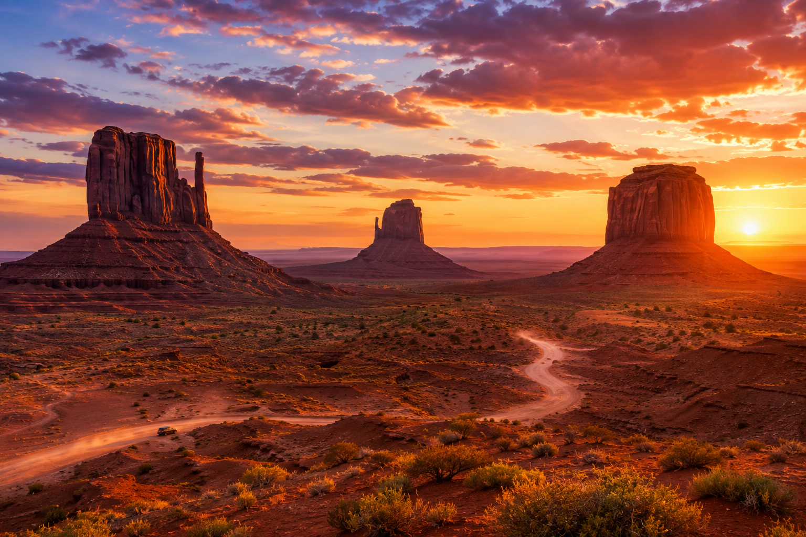
Park plemienny leży na suwerennej ziemi Navajo, jest prowadzony przez Naród Navajo i nie należy do systemu parków narodowych. Wasz karnet roczny nic tu nie znaczy. Wstęp to obecnie 10 $ od osoby za dzień, wyłącznie kartą. Zgłaszana jest też osobna opłata za pojazd na pętli widokowej, więc warto założyć jedno i drugie i potwierdzić na miejscu.
Valley Drive, siedemnastomilowa pętla, to główna atrakcja dostępna własnym samochodem.
Wycieczka z przewodnikiem Navajo (zwykle od 1,5 do 3 godzin, mniej więcej 85–110 $ od osoby) otwiera mniej więcej połowę parku, do której odwiedzający na własną rękę w ogóle nie mają wstępu: Mystery Valley, Big Hogan, Ear of the Wind. Operatorzy mają bazy przy centrum informacji i przy Goulding's. Rezerwacja z wyprzedzeniem jest rozsądna, ale w kwietniu zwykle udaje się też tego samego dnia.
Zachód słońca o 20:02 czasu lokalnego. Taras przy centrum informacji patrzy prosto w dolinę i jest najprostszym miejscem, by go obejrzeć.
Valley Drive, pętla 17 mil. Naród Navajo opisuje ją jako drogę w całości naturalną i gruntową, z odcinkami głębokiego piasku. Jej przejezdność zmienia się wraz z pogodą, a ta w tej części roku bywa kapryśna.
Nasza sugestia: zapytajcie przy bramie o aktualny stan nawierzchni i podejmijcie decyzję na miejscu. Ze względu na warunki drogowe zależne od zmiennej pogody zakładamy, że plan tego popołudnia może zostać skorygowany już w terenie: albo pełna pętla, albo pierwsze punkty widokowe przy centrum informacji, albo wycieczka z przewodnikiem, która i tak pokazuje więcej.
Dziś przestawiacie zegarki o godzinę do przodu. Naród Navajo stosuje czas letni, w odróżnieniu od reszty Arizony. Monument Valley chodzi według czasu górskiego letniego, czyli tego samego co Utah i Kolorado i o godzinę wcześniejszego niż Wielki Kanion. Godziny otwarcia parku, terminy wycieczek i rezerwacje w restauracjach są podawane w lokalnym czasie Navajo.
Paliwo: Cameron, Tuba City i Kayenta. Odcinek między Tuba City a Kayentą to 73 mile bez niczego.
Alkohol: sprzedaż i posiadanie alkoholu są zakazane na całym terenie Narodu Navajo, w tym w Monument Valley i Kayencie. Restauracje go nie podają.
Drony są zakazane na całym terytorium Navajo, podobnie jak wspinaczka i schodzenie z wyznaczonych tras.
Noclegi: hotel The View stoi na krawędzi wewnątrz parku, Goulding's Lodge tuż obok po stronie Utah, a Kayenta 24 mile na południe ma sieciowe hotele. Wszystkie trzy zapełniają się wcześnie na wiosenne weekendy.
Niedziela, 25 kwietnia 2027
US-160 przez Naród Navajo · wjazd do Kolorado · skalne miasta
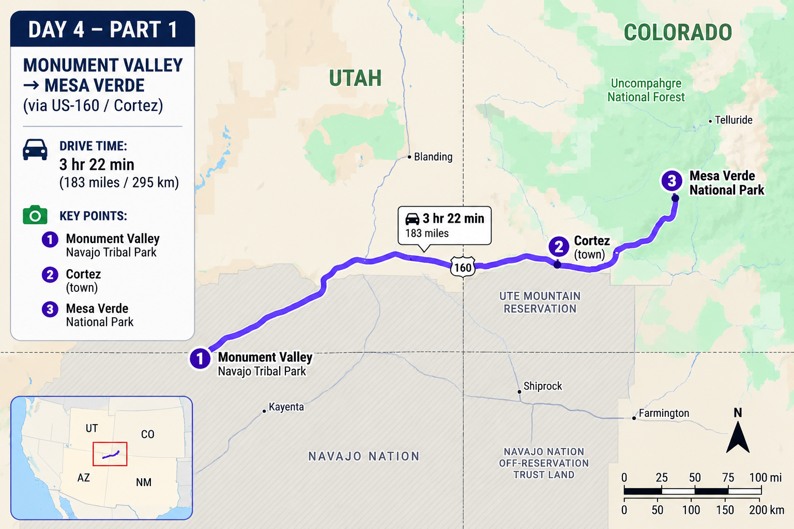
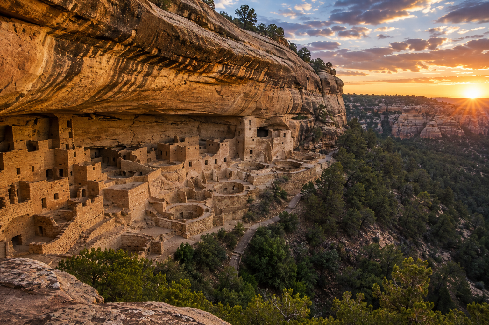
Łatwy i szybki odcinek na wschód drogą US-160 przez Kayentę i Teec Nos Pos, z górami Carrizo na północy i ogromną pustką ziem Navajo po obu stronach. Droga przechodzi z Arizony prosto do Kolorado kilka mil na północny wschód od Four Corners. Na tym odcinku nie przejeżdżacie ani przez Nowy Meksyk, ani przez Utah, mimo że oba są bardzo blisko.
Cortez to ostatnie miasto przed parkiem i rozsądne miejsce na paliwo i obiad. Wjazd do Mesa Verde jest osiem mil na wschód od niego przy US-160.
Blisko 5 000 znanych stanowisk archeologicznych i około 600 skalnych domostw, wbudowanych w nisze wysokiej, zielonej mesy mniej więcej między 600 a 1300 rokiem naszej ery i opuszczonych w ciągu jednego pokolenia. Od 1978 roku obiekt na liście UNESCO.
Najpierw warto zrozumieć geografię. Od bramy wjazdowej do stanowisk na Chapin Mesa jest 21 mil i około 45 minut stromej, krętej drogi z serpentynami. Ten przejazd jest częścią zwiedzania, bo Park Point na wysokości 8 572 stóp daje widok na cztery stany, ale trzeba go wliczyć w czas. Zarezerwujcie w parku minimum trzy do czterech godzin. Sześć też się nie zmarnuje.
Wycieczki z rangerem to jedyny sposób, by wejść do Cliff Palace, Balcony House, Long House czy Square Tower House, a sezon zaczyna się dopiero na początku maja (4 maja w 2025 i 2026 roku). 25 kwietnia 2027 najprawdopodobniej jeszcze nie ruszą. Wetherill Mesa, gdzie leży Long House i samodzielnie zwiedzane Step House, pozostaje zamknięta do końca maja.
To nie jest katastrofa, tylko inny kształt wizyty. Wszystko wymienione niżej jest otwarte i zwiedza się samodzielnie, nie trzeba polować na bilety, a park jest pusty. Aktualny stan warto sprawdzić na stronie warunków w Mesa Verde na dwa tygodnie przed wyjazdem.
| Miejsce | Uwagi |
|---|---|
| Centrum informacji i badań | Przy wjeździe od US-160. Otwarte codziennie, mniej więcej 8:30–16:00. Zacznijcie tutaj. |
| Mesa Top Loop Road | Sześciomilowa jednokierunkowa pętla z dwunastoma krótkimi utwardzonymi ścieżkami do odsłoniętych ziemianek i osad, pokazująca 700 lat budownictwa po kolei. Codziennie od 8:00 do zachodu słońca. |
| Punkty Sun Point i Sun Temple | Najlepsze darmowe widoki na Cliff Palace, prosto przez kanion. Tak właśnie ogląda się go w kwietniu. |
| Cliff Palace Loop Road | Otwarta cały rok przy sprzyjającej pogodzie. Widoki z góry na Cliff Palace, Hemenway House i House of Many Windows. |
| Muzeum archeologiczne Chapin Mesa | Otwierane ponownie pod koniec kwietnia po remoncie, warto sprawdzić. Z tarasu za muzeum widać Spruce Tree House. |
| Far View Sites | Osady na płaskowyżu, otwierane wiosną. Zwiedzanie samodzielne, zwykle w pustce. |
| Soda Canyon Overlook Trail | Łatwy spacer 1,2 mili do widoku na Balcony House po drugiej stronie kanionu. |
Uwaga: Spruce Tree House jest zamknięte dla zwiedzających od 2015 roku z powodu ryzyka obrywu skalnego i pozostaje takie do dziś. Punkty widokowe przy muzeum dają na nie bardzo dobry widok.
Karnet: Mesa Verde pobiera opłatę za wstęp, objętą Waszym karnetem rocznym. To nie jest jeden z parków z dopłatą 100 $ dla nierezydentów.
Wysokość: mesa leży na 7 000–8 500 stóp. Pod koniec kwietnia może sypnąć śniegiem, a opóźnione otwarcia dróg po burzach są publikowane na stronie parku każdego ranka.
Paliwo: Cortez albo Mancos. W parku stacji nie ma.
Czas: żeby zdążyć do Aztec Ruins przed zamknięciem, trzeba wyjechać z Mesa Verde około 14:30. Szczegóły w części drugiej.
Niedziela, 25 kwietnia 2027 · popołudnie
Przez Durango · wjazd do Nowego Meksyku · Wielka Kiva
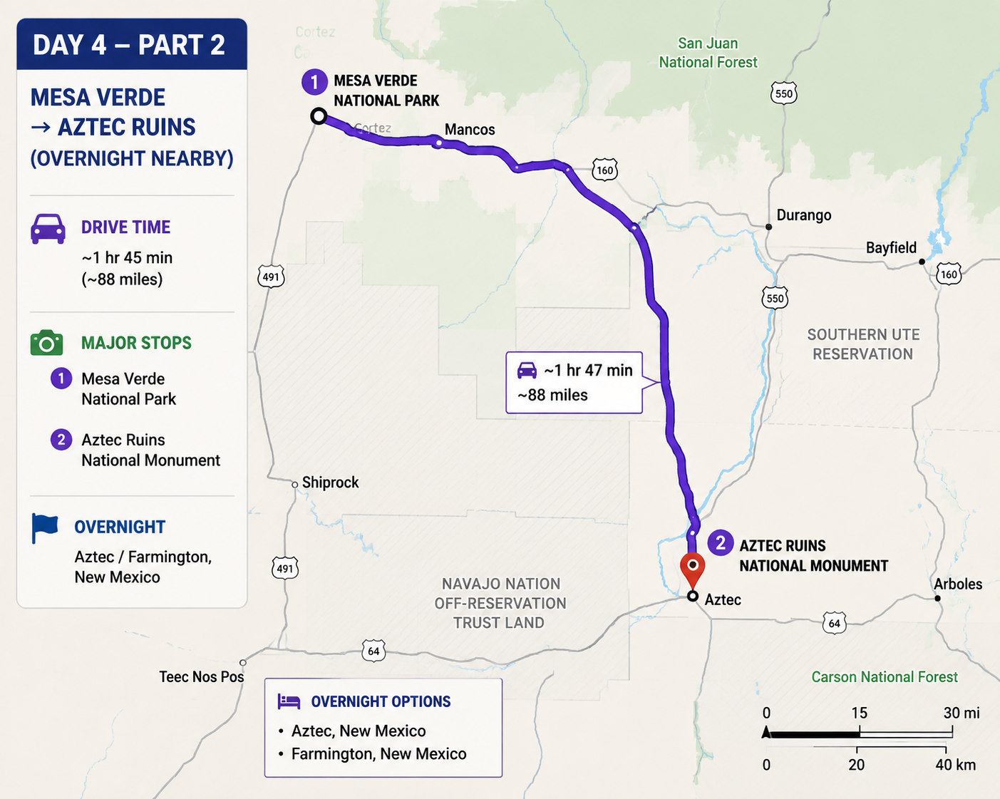
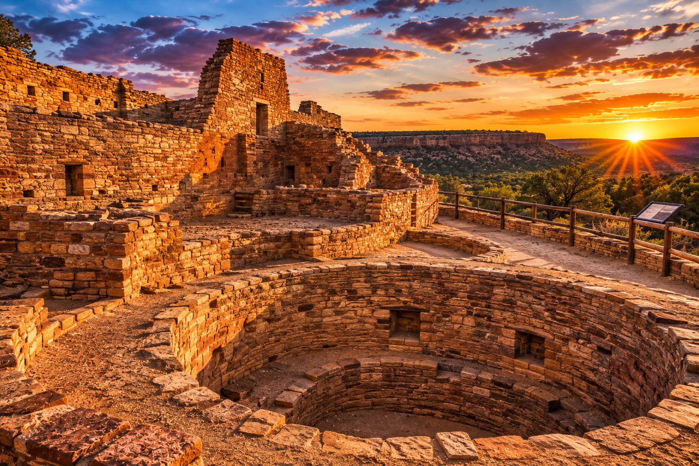
Krótko i przyjemnie: zjazd z mesy, na wschód przez Mancos, potem na południe drogą US-550 z Durango przez rezerwat Southern Ute do Nowego Meksyku. Granica stanu jest jakieś piętnaście mil na południe od Durango. Aztec to małe miasto nad rzeką Animas, a stanowisko leży milę na północ od jego centrum.
Nazwę nadali dziewiętnastowieczni osadnicy, którzy uznali, że coś tak dobrze zbudowanego musi być azteckie. W rzeczywistości to wielki dom kultury Chaco: ponad 400 kamiennych pomieszczeń postawionych w około trzydzieści lat, mniej więcej w 1100 roku, a sto lat później ponownie zasiedlonych przez ludzi powiązanych z Mesa Verde. Osobny obiekt na liście UNESCO.
Wyjątkowe są tu dwie rzeczy. Pierwsza to możliwość przejścia przez budowlę: oryginalnymi korytarzami, pod oryginalnym drewnianym stropem sprzed 900 lat, obok zaprawy, w której wciąż widać odciski palców ludzi, którzy ją nakładali. Prawie nigdzie indziej nie da się tego zrobić. Druga to Wielka Kiva: czterdziestostopowa, częściowo zagłębiona komora ceremonialna, zrekonstruowana w 1934 roku i jedyna taka, do której można zejść.
Ścieżka do samodzielnego zwiedzania ma pół mili i zajmuje około 45 minut. Z muzeum i piętnastominutowym filmem policzcie godzinę i kwadrans.
Jedynym realnym ograniczeniem jest dziś czas. Teren stanowiska zamyka się o 17:00, centrum informacji i muzeum również o 17:00, a otwierają się o 9:00. Żeby zobaczyć wszystko spokojnie, warto być przy bramie do 15:30–15:45, czyli wyjechać z Mesa Verde około 14:30. Jeśli Mesa Verde się przeciągnie, Aztec Ruins leży na tyle blisko hotelu, że można je zobaczyć rano w dniu 5, ale dzień 5 jest długi, więc lepiej zrobić to dzisiaj.
Wstęp jest bezpłatny. Aztec Ruins to jednostka Parków Narodowych bez opłat, karnet nie jest potrzebny, choć oczywiście pozostaje ważny wszędzie indziej.
Aztec jest małe, z kilkoma niezależnymi motelami i bardzo sympatyczną historyczną główną ulicą. Farmington, czternaście mil na zachód, ma pełen wybór sieciowych hoteli i znacznie więcej opcji na kolację. Jedno i drugie się sprawdzi, a Farmington leży minimalnie lepiej pod wczesny start w dniu 5, co jutro ma większe znaczenie niż zwykle.
Jutro jest zdecydowanie najdłuższym dniem wyjazdu: około 440 mil i dziewięć godzin jazdy przez trzy przełęcze powyżej 10 000 stóp. Zatankujcie dziś wieczorem, spakujcie auto dziś wieczorem i zaplanujcie wyjazd na 7:00. Rozdział o dniu 5 lepiej przeczytać wieczorem niż rano.
Poniedziałek, 26 kwietnia 2027
Million Dollar Highway · trzy przełęcze powyżej 10 000 stóp · Rim Rock Drive
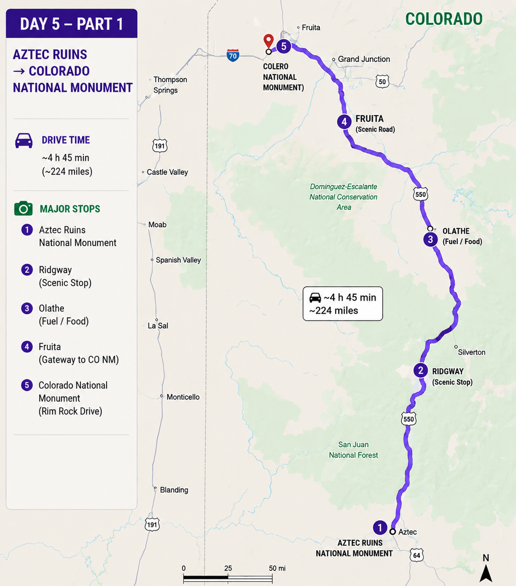
Części pierwsza i druga razem to około 440 mil i dziewięć godzin jazdy, plus półtorej godziny na Rim Rock Drive. To naprawdę pełny dzień i wymaga wyjazdu o 7:00. W zamian jest to też najbardziej widowiskowy dzień jazdy w całym wyjeździe: alpejski rano, czerwonoskalny w porze obiadu i pustynny o zachodzie słońca.
Jeśli wolicie tego nie robić w całości, uczciwie najłatwiej skrócić część drugą. Szczegóły znajdziecie na stronie dnia 5, część druga.
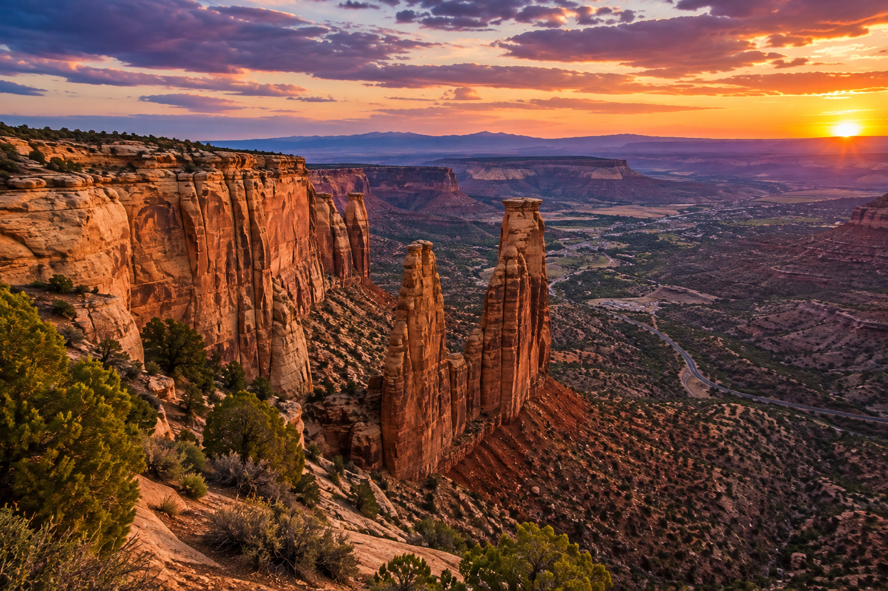
To jedna z najlepszych tras samochodowych Ameryki Północnej i zasługuje na traktowanie jak cel, a nie jak przejazd. Z Durango droga wspina się przez lasy San Juan National Forest na przełęcze Coal Bank (10 640 stóp) i Molas (10 910 stóp) do Silverton, dawnej osady górniczej w kotle trzynastotysięcznych szczytów, wciąż z nieutwardzoną główną ulicą.
Na północ od Silverton zaczyna się właściwa Million Dollar Highway: jedenaście mil przez przełęcz Red Mountain (11 018 stóp) i zjazd półką skalną nad przepaścią do Ouray. Na długich odcinkach nie ma barierek, a przepaść jest spora. Droga jest w całości asfaltowa i utrzymywana przez cały rok. Jedźcie powoli, korzystajcie z zatoczek i nie wjeżdżajcie na nią przy złej widoczności. Zarezerwujcie znacznie więcej czasu, niż sugeruje sam dystans.
Za Ouray i Ridgway góry ustępują terenom ranczerskim, potem sadom w okolicy Delta i Olathe, a na końcu szerokiej dolinie rzeki Kolorado przy Grand Junction.
US-550 to asfaltowa droga stanowa. Późnokwietniowy śnieg na wysokości 11 000 stóp jest jednak normalny, a przełęcz Red Mountain bywa wiosną zamykana na czas prac lawinowych, czasem na kilka godzin. Sprawdźcie sytuację przed wyjazdem z Aztec.
Jeśli przełęcz będzie zamknięta albo prognoza będzie zła, alternatywą jest droga na zachód US-64 do Shiprock, na północ US-491 do Monticello, potem US-191 i I-70. Dłuższa w milach, ale niżej położona i szybsza, a przy okazji stawia Was w zasięgu Moab. Zapytajcie w hotelu, lokalne rady na temat tej drogi są wiarygodne. Ze względu na warunki drogowe zależne od zmiennej pogody zakładamy, że wybór wariantu zapadnie rano, na miejscu.
Dwadzieścia tysięcy akrów pionowych czerwonych ścian i wolno stojących monolitów wyciętych w krawędzi płaskowyżu Uncompahgre, tuż nad Grand Junction i Fruita. Odwiedzany o wiele rzadziej, niż na to zasługuje.
Cały park to w zasadzie jedna droga. Rim Rock Drive biegnie 23 mile między bramą w Fruicie (zachodnią) a bramą w Grand Junction (wschodnią), przechodząc przez tunele wykute w latach trzydziestych, a potem prowadząc krawędzią kanionu obok kilkunastu punktów widokowych. Bez postojów zajmuje 45 minut do godziny, z postojami policzcie półtorej do dwóch godzin.
Jadąc od południowego wschodu wjedziecie od strony Grand Junction, a wyjedziecie w Fruicie, co stawia Was od razu na I-70 w kierunku zachodnim, czyli tam, gdzie trzeba na część drugą.
| Punkt widokowy | Dlaczego warto |
|---|---|
| Cold Shivers Point | Pionowy uskok nad kanionem Columbus, blisko wschodniej bramy. |
| Ute Canyon Overlook | Najszerszy widok na kanion na całej trasie. |
| Artists Point i Highland View | Warstwowe ściany kanionu i klify Book Cliffs w tle. |
| Coke Ovens Overlook | Zaokrąglone piaskowcowe kopuły, często spotyka się tu owce gruborogie na drodze. |
| Grand View | Independence Monument, wolno stojąca wieża o wysokości 450 stóp, widziana z czoła. |
| Book Cliffs / Fruita Canyon View | Przy centrum informacji, z widokiem na całą dolinę. |
Wstęp kosztuje 25 $ od pojazdu i jest objęty Waszym karnetem rocznym. Centrum informacji leży cztery mile od bramy w Fruicie. Rim Rock Drive jest otwarta cały rok, przy sprzyjającej pogodzie.
Paliwo: Durango, potem Ouray albo Ridgway, potem Grand Junction. Nie zjeżdżajcie do rezerwy między Durango a Ouray, bo tam prawie nic nie ma.
Wysokość: spędzicie dwie godziny powyżej 9 000 stóp. Pijcie więcej wody, niż wydaje się potrzebne, i spodziewajcie się, że auto będzie ciągnąć leniwiej.
Hamulce: na zjeździe do Ouray używajcie niskiego biegu zamiast ciągłego hamowania.
Zachód słońca: 20:02 w Grand Junction. Z Rim Rock Drive warto zjechać około 15:30, żeby dotrzeć do Torrey o cywilizowanej porze.
Poniedziałek, 26 kwietnia 2027 · popołudnie i wieczór
I-70 na zachód do Utah · San Rafael Swell · przez Capitol Reef w złotej godzinie
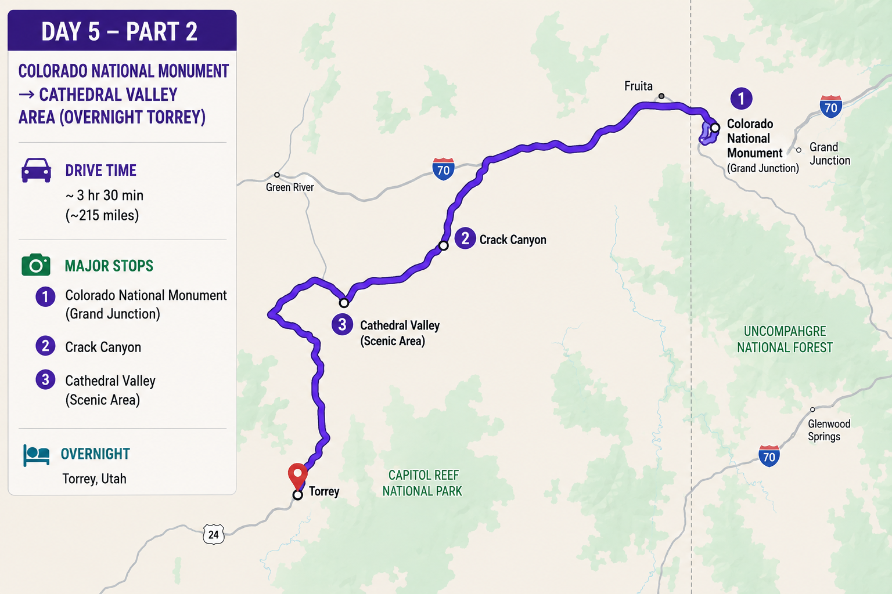
To jedno miejsce w planie, w którym rysunek na mapie nie do końca zgadza się z terenem, i wolimy powiedzieć o tym teraz niż o zmierzchu przy brodzie.
Do Cathedral Valley prowadzi wyłącznie pętla Cathedral Valley Loop o długości 57,6 mili, nieutwardzona droga w odległej północnej części Parku Narodowego Capitol Reef. Służba Parków podaje, że przejazd zajmuje od sześciu do ośmiu godzin powolnej jazdy. Dojazd od południa drogą Hartnet Road wymaga przejechania brodem rzeki Fremont, bo mostu nie ma. Woda ma zwykle stopę głębokości nad kamienistym dnem, ale wiosną poziom potrafi gwałtownie wzrosnąć, a pętla przecina ponad trzydzieści suchych koryt, bez wody pitnej, bez zasięgu i przy znikomym ruchu.
Nawet pomijając stan drogi, sześć do ośmiu godzin po prostu nie mieści się w popołudniu, które zaczyna się w Grand Junction. Ze względu na warunki drogowe zależne od zmiennej pogody ostateczna decyzja co do tej części planu zapadnie już na miejscu, po sprawdzeniu stanu brodu i aktualnej prognozy.
Podobnie Crack Canyon. Dojazd prowadzi cztery mile nieutwardzoną Behind the Reef Road, z szorstką końcówką, a potem czeka 3 do 7 mil marszu z elementami wspinaczki. To świetna wycieczka, gdy ma się na nią zapas pół dnia, ale nie mieści się w dniu przejazdowym.
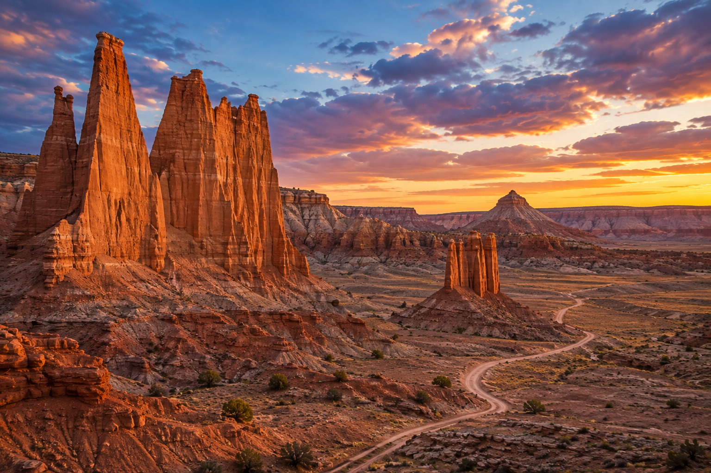
Trasa z Hanksville do Torrey biegnie drogą Utah State Route 24, w całości asfaltową, która przechodzi bezpośrednio przez Park Narodowy Capitol Reef, wzdłuż rzeki Fremont pod fałdem Waterpocket Fold. Będziecie nią jechać późnym popołudniem, czyli w najlepszej możliwej porze. Za sam przejazd UT-24 nie ma opłaty.
W mniej więcej ostatnie półtorej godziny dnia, bez zjeżdżania z asfaltu, można zobaczyć:
| Postój | Co to jest | Dojazd |
|---|---|---|
| Factory Butte | Wolno stojący ostaniec o wysokości 6 300 stóp, wyrastający z szarych pustkowi na zachód od Hanksville. | Asfaltowe zatoczki przy UT-24 |
| Bentonite Hills | Pasiaste, fioletowo-czerwono-szare wzgórza ilaste koło Caineville, czyli skraj tej samej krainy co Cathedral Valley. | Widoczne z UT-24 |
| Chata Behunin | Jednoizbowa chata pionierska z 1882 roku tuż przy drodze. | Asfaltowa zatoczka |
| Petroglify Fremont | Pomost do ściany skalnej z tysiącletnimi wizerunkami owiec i postaci ludzkich. | Asfalt, pomost |
| Panorama Point | Szeroki widok na fałd, miejsce na zachód słońca. | Asfaltowy zjazd |
| Goosenecks i Sunset Point | Potok Sulphur 800 stóp niżej i najlepszy zachód słońca w okolicy, dziesięć minut spacerem. | Krótki utwardzony żwirowy zjazd |
Jeśli Cathedral Valley jest dla Was ważne, najlepiej zaplanować na nie osobny blok czasu: wyprawę terenową z przewodnikiem z Torrey albo cały poranek następnego dnia. Realnie oznaczałoby to rezygnację z Bryce albo Zion w dniu 6, więc to decyzja na etapie planowania, a nie na rano. O aktualny stan brodu warto zapytać w centrum informacji Capitol Reef w Fruicie.
Z Fruity autostrada I-70 biegnie na zachód przez granicę stanu i północną część San Rafael Swell, czyli sto mil naprawdę zdumiewającej pustki i jeden z najbardziej widokowych odcinków autostrady w kraju. Zjeżdżacie na zjeździe 149 na UT-24 na południe, mijacie zjazd do Goblin Valley, przejeżdżacie przez Hanksville, a potem na zachód wzdłuż rzeki Fremont do Capitol Reef i dalej do Torrey.
Torrey to małe, ładne miasteczko na wysokości 6 800 stóp, z zaskakująco dobrym jak na swoje rozmiary wyborem miejsc do zjedzenia. Lokalne pewniaki to Rim Rock i Café Diablo. Zarezerwujcie stolik, bo sezon dopiero się zaczyna, a kuchnie zamykają wcześnie.
Paliwo: Green River albo Hanksville. Odcinek I-70 między Green River a Saliną nie ma żadnych usług przez 106 mil, to najdłuższa taka przerwa w amerykańskim systemie autostrad. Nie przejeżdżacie go w całości, ale nawyk warto zachować.
Zaopatrzenie: Hanksville to ostatni sklep przed Torrey.
Pogoda: Torrey leży na 6 800 stóp, noce pod koniec kwietnia są bliskie zeru.
Wtorek, 27 kwietnia 2027 · rano
Droga widokowa nr 12 · grzbiet Hogback · amfiteatr
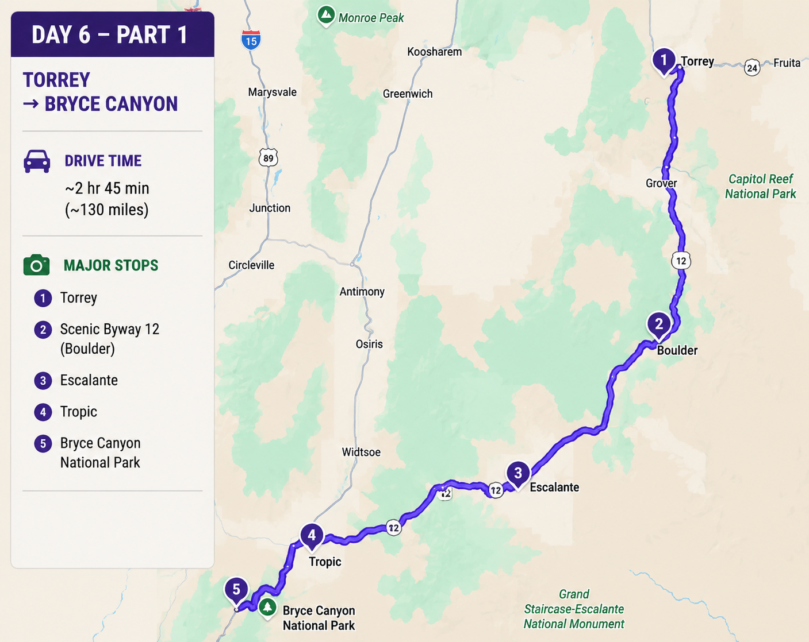
Dziś trzy odcinki w jeden dzień, czyli około 385 mil i sześć i pół godziny jazdy, plus czas w dwóch parkach narodowych. To się da zrobić, ale tylko przy wczesnym starcie i pilnowaniu zegara. Sprawdzony układ: wyjazd z Torrey o 7:30, Bryce od 10:15 do 13:00, Zion od 14:45 do 17:30, Las Vegas do 20:00 czasu lokalnego. Wszystko poniżej jest napisane z myślą o tym rytmie.
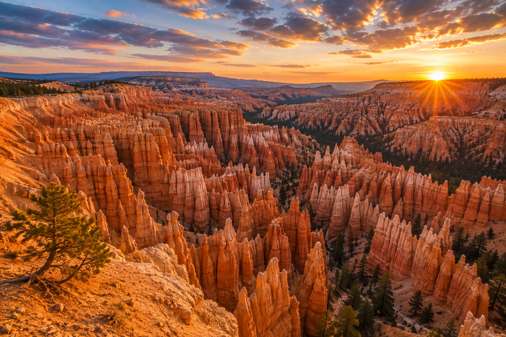
Regularnie wskazywana wśród najpiękniejszych dróg Ameryki, a sam przejazd jest wydarzeniem co najmniej równym celowi podróży. Zaraz za Torrey wspina się zboczem Boulder Mountain do około 9 600 stóp, przez osiki i jodły, z długimi widokami na wschód na Waterpocket Fold i góry Henry.
Między Boulder a Escalante znajduje się Hogback: trzy mile drogi biegnącej po grzbiecie ostrym jak nóż, z terenem opadającym po obu stronach i bez barierek. Jest asfaltowa, dwupasmowa i przy rozsądnej prędkości całkowicie bezpieczna, ale wymaga uwagi. Podziwiajcie z zatoczek, nie zza kierownicy.
Dalej Escalante, ogromna pustka pomnika narodowego Grand Staircase-Escalante na południu, zjazd przez Henrieville i Cannonville, obok czerwonych klifów w Tropic i podjazd na płaskowyż Bryce.
To wcale nie kanion, tylko ciąg naturalnych amfiteatrów wyżłobionych w krawędzi płaskowyżu Paunsaugunt, wypełnionych najgęstszym skupiskiem iglic hoodoo na świecie. Park leży między 8 000 a 9 100 stóp, czyli najwyżej w całym wyjeździe.
Mając dwie do trzech godzin, priorytetem jest amfiteatr, a cztery główne punkty widokowe leżą blisko siebie:
| Punkt widokowy | Uwagi |
|---|---|
| Sunrise Point | Widok na Queen's Garden, najłagodniejsze zejście między iglice. |
| Sunset Point | Klasyczny widok i początek pętli Navajo Loop. Mimo nazwy najlepsze światło ma przed południem. |
| Inspiration Point | Trzy poziomy, z górnego najszerszy widok na tak zwane Silent City. |
| Bryce Point | Najwyższy i najszerszy z całej czwórki, z widokiem na cały amfiteatr. |
Wszystkie cztery łączy Rim Trail. Pół mili między Sunrise a Sunset jest utwardzone i płaskie i to najlepszy krótki spacer w parku.
Jeśli chcecie zejść poniżej krawędzi, najłatwiejsze jest zejście Queen's Garden Trail z Sunrise Point (1,8 mili w obie strony, 320 stóp przewyższenia). Połączenie go z Navajo Loop daje trzymilową pętlę, która jest wizytówką parku, ale przeczytajcie najpierw uwagę poniżej.
Spodziewajcie się około 15°C w dzień i mniej więcej minus 1°C w nocy, przy całkiem możliwym śniegu. Szlaki w amfiteatrze trzymają lód i ubity śnieg jeszcze w maju, a odcinek Wall Street na pętli Navajo Loop bywa wczesną wiosną standardowo zamykany z powodu lodu i obrywów. Gdy jest zamknięty, strona Two Bridges zwykle pozostaje otwarta. Sprawdźcie tablicę ze stanem szlaków przy centrum informacji i rozważcie raczki, jeśli planujecie zejście.
Poruszanie się: autobus parkowy w Bryce zwykle rusza na początku kwietnia i jest opcjonalny. W odróżnieniu od Zion tutaj można dojechać samochodem do każdego punktu widokowego. Osiemnastomilowa droga widokowa na południe do Rainbow Point to dodatkowa godzina do półtorej w obie strony, a jej wyższe partie potrafią zostać zamknięte po śniegu. Przy dzisiejszym planie lepiej poświęcić czas amfiteatrowi.
Opłaty: 35 $ od pojazdu, objęte karnetem rocznym. Bryce to jeden z trzech parków na tej trasie z dopłatą 100 $ od osoby dla nierezydentów, którą Wasz karnet również znosi.
Paliwo: Torrey, potem Escalante, potem Bryce Canyon City. Tankujcie w Torrey, bo na odcinku przez Boulder Mountain nie ma nic.
Śniadanie: kuchnie w Torrey w sezonie otwierają wcześnie, ale w kwietniu nie wszystkie. Sprawdźcie poprzedniego wieczoru.
Warstwy ubrań: o 8:15 będziecie na 9 600 stopach, a wieczorem na pustyni w Nevadzie. Dziś jest największa rozpiętość temperatur w całym wyjeździe, potencjalnie 22°C różnicy między Boulder Mountain a Las Vegas.
Wtorek, 27 kwietnia 2027 · popołudnie
Red Canyon · droga Zion–Mount Carmel · Canyon Overlook
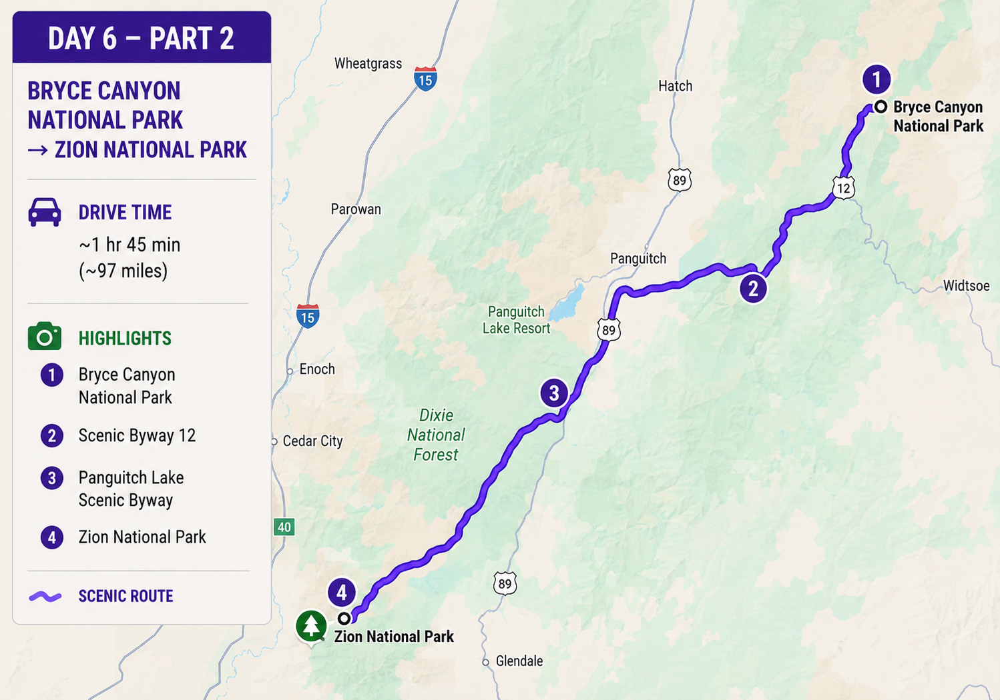
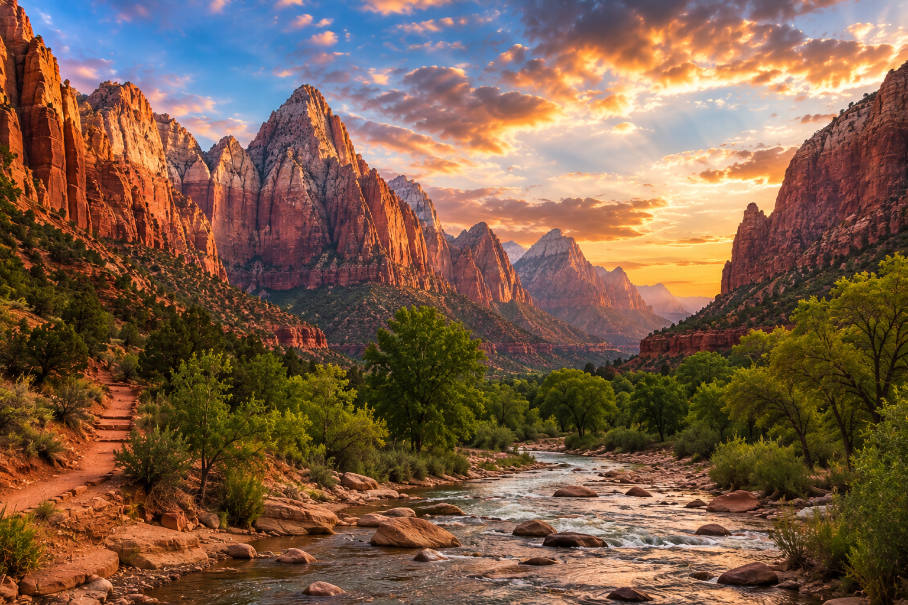
Na zachód drogą UT-12 przez Red Canyon, gdzie droga przechodzi przez dwa łuki wykute w jaskrawo pomarańczowej skale. To dwuminutowy postój, który większość ludzi pomija. Potem na południe drogą US-89 obok Panguitch i Hatch i na zachód drogą UT-9 do wschodniej bramy parku.
Zion Canyon Scenic Drive jest zamknięta dla samochodów prywatnych zawsze wtedy, gdy jeżdżą autobusy parkowe, czyli od marca do końca listopada. W 2026 roku kursowały od 7:00, a ostatni odjazd z centrum informacji w rozkładzie wiosennym był o 18:00. W 2027 należy spodziewać się podobnie.
W praktyce nie da się dojechać samochodem do Riverside Walk, Emerald Pools ani Narrows. Trzeba zaparkować przy centrum informacji albo w Springdale, ustawić się w kolejce i wsiąść do autobusu. Przejazd na koniec kanionu i z powrotem to jakieś 90 minut, zanim gdziekolwiek pójdziecie pieszo.
Mając dwie i pół do trzech godzin i przejazd do Las Vegas przed sobą, nie warto z tym walczyć. Poniższy plan daje dwa największe widoki Zion bez stania w kolejce.
| Godzina | Gdzie | Co |
|---|---|---|
| 14:45 | Wschodnia brama i droga Zion–Mount Carmel | Sama droga: kopuły z litej skały, Checkerboard Mesa, serpentyny. Zatrzymujcie się często, o zatoczki tu chodzi. |
| 15:15 | Canyon Overlook Trail | Milowa trasa w obie strony, 45 do 60 minut, start z małego parkingu tuż na wschód od tunelu. Kończy się na półce z widokiem wprost wzdłuż dolnego kanionu Zion, prawdopodobnie najlepszy stosunek widoku do wysiłku w całym parku. Parking jest ciasny, bierzcie, co się trafi. |
| 16:15 | Tunel Mount Carmel i serpentyny | Tunel o długości 1,1 mili, wydrążony w 1930 roku, a potem sześć zakrętów w dół na dno kanionu. |
| 16:40 | Centrum informacji, Pa'rus Trail, Springdale | Jeśli chcecie zejść na dno kanionu: utwardzona ścieżka Pa'rus Trail biegnie 1,7 mili od centrum informacji wzdłuż rzeki Virgin i nie wymaga autobusu. Można też przejechać dwa przystanki do Court of the Patriarchs i wrócić. |
| 17:30 | Wyjazd do Las Vegas | Przez Springdale i na zachód drogą UT-9 do I-15. |
Jeśli macie więcej czasu, bo Bryce poszło sprawnie albo uznacie, że Vegas może poczekać, oczywistym dodatkiem jest Riverside Walk (2,2 mili po utwardzonej ścieżce, z ostatniego przystanku autobusu przy Temple of Sinawava). To jeden z najpiękniejszych łatwych spacerów w amerykańskich parkach. Policzcie dwie i pół godziny z centrum informacji i z powrotem i pilnujcie godziny ostatniego kursu.
Nie dzisiaj: Angels Landing wymaga zezwolenia z loterii na Recreation.gov i zajmuje cztery do pięciu godzin. Narrows wymaga brodzenia w rzece w suchym skafandrze, a wiosenne roztopy często zamykają szlak w kwietniu. Żadne z nich nie pasuje do dnia przejazdowego, ale oba są dobrym powodem, żeby tu wrócić.
Opłaty: 35 $ od pojazdu, objęte karnetem. Zion to trzeci z parków z dopłatą dla nierezydentów na tej trasie.
Parking: parking przy centrum informacji zwykle zapełnia się przed południem, po południu w kwietniu macie realną szansę. Awaryjnie zostaje parking w Springdale i bezpłatny autobus miejski.
Ciepło: dno kanionu Zion leży na 4 000 stóp i bywa gorąco, często 25°C pod koniec kwietnia, czyli zupełnie inaczej niż rano w Bryce.
Wtorek, 27 kwietnia 2027 · wieczór
Virgin River Gorge · dwie granice stanowe · godzina do tyłu
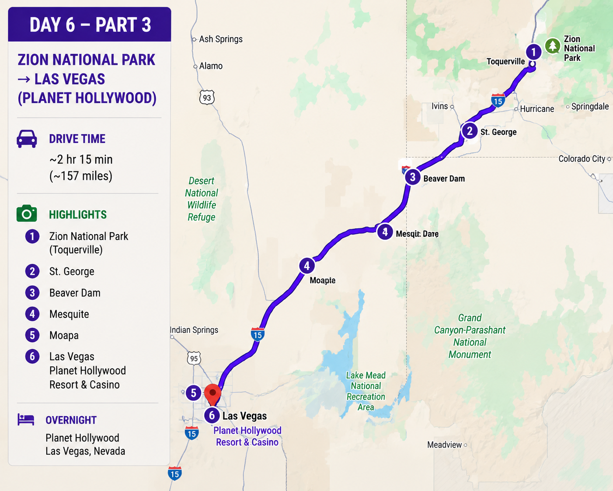
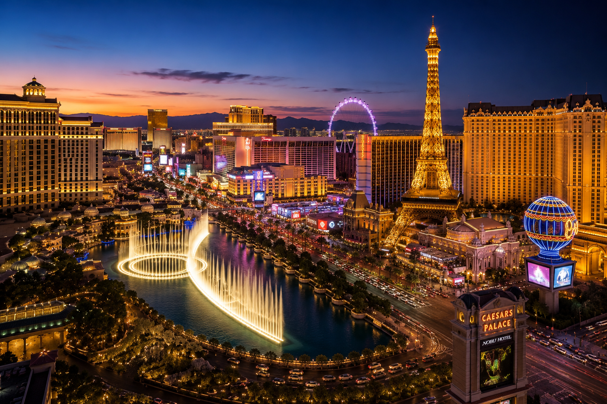
Na zachód drogą UT-9 przez La Verkin i Hurricane do I-15, potem na południe. Za St George autostrada wpada w Virgin River Gorge, dwadzieścia dziewięć mil przecinających północno-zachodni róg Arizony i wijących się w głębokim wapiennym kanionie. Gdy otwarto ten odcinek w 1973 roku, był najdroższym fragmentem autostrady poza miastem w historii Stanów. To naprawdę efektowna droga i pojawia się bez ostrzeżenia.
Potem Mesquite, granica Nevady, dolina Moapa i w końcu Strip wyrastający z płaskiej, czarnej pustyni.
Na granicy Nevady cofacie zegarki o godzinę. Wyjeżdżacie z Utah w czasie górskim letnim, a wjeżdżacie do Nevady w czasie pacyficznym letnim. Wyjazd z Zion o 17:30 stawia Was przy Planet Hollywood około 18:45–19:15 czasu lokalnego, czyli wcześniej, niż sugeruje czas jazdy, i z wieczorem wciąż do wykorzystania.
Planet Hollywood Resort & Casino stoi w środku Stripu, przy Harmon Avenue, połączony z galerią Miracle Mile Shops i dokładnie naprzeciwko fontann Bellagio. Po sześciu dniach małych pustynnych miasteczek kontrast jest całkowity i o to w tym zakończeniu chodzi.
Rzeczy warte wiedzenia: opłata resortowa jest naliczana osobno i nie zawsze wliczona w cenę pokoju, samodzielne parkowanie przy hotelach na Stripie zwykle kosztuje, a spacer między sąsiednimi hotelami zawsze trwa dłużej, niż się wydaje, często piętnaście minut między obiektami, które wyglądają na przyległe.
Jeśli nie macie ochoty nigdzie wychodzić: fontanny Bellagio grają co piętnaście do trzydziestu minut do północy i są bezpłatne, a widok z tarasu Cosmopolitan naprzeciwko to najlepsze darmowe miejsce na Stripie.
Zatankujcie dziś wieczorem, jeśli się da. Paliwo na Stripie jest drogie, a rano lepiej ruszyć bez postojów.
Przepakujcie się wieczorem. Wszystko potrzebne na lot powinno być dostępne bez rozkładania bagażnika na LAX.
Ustalcie godzinę wyjazdu i jej się trzymajcie. Szczegóły w dniu 7. Wyjazd z Las Vegas o 10:00 daje komfortowy dzień, wyjazd w południe już nie.
Środa, 28 kwietnia 2027
Przejazd przez Mojave · postoje wybierane rano · LAX do 18:30
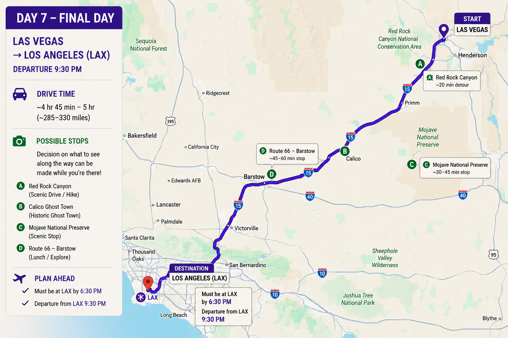
Bądźcie na LAX o 18:30. Virgin Atlantic zaleca przyjazd trzy godziny przed lotem międzynarodowym, a 18:30 przy odlocie o 21:30 to dokładnie tyle. Nie ma tu żadnego zapasu.
Zaplanujcie dzień wstecz od tej godziny:
| Godzina | Punkt planu |
|---|---|
| 10:00 | Wyjazd z Las Vegas |
| 13:00 | Barstow, naturalne miejsce na obiad i moment decyzji |
| 15:00 | Najpóźniejszy bezpieczny wyjazd z Barstow. Później o wszystkim decyduje już ruch w Los Angeles, a nie dystans |
| 17:45 | Przyjazd do centrum wypożyczalni na LAX i zdanie samochodu |
| 18:15 | Wejście do kolejki SkyLink, około 10 minut do terminali |
| 18:30 | Terminal 2, odprawa |
| 21:30 | Odlot do Londynu Heathrow |
Ryzykiem jest ruch w Los Angeles, nie pustynia. Dwieście mil z Las Vegas do Victorville potrafi zająć trzy godziny, a ostatnie 90 mil z Victorville na LAX od półtorej do trzech godzin, zależnie od tego, kiedy traficie na przełęcz Cajon i korytarz I-15, I-215 oraz I-10. Traktujcie popołudniowe szacunki podejrzliwie i zostawcie pełną godzinę zapasu.
Dziś nic nie jest ustalone. Zdecydujcie przy śniadaniu, w zależności od samopoczucia, pogody i tego, co pokazują aplikacje z ruchem drogowym. Wszystkie poniższe leżą przy I-15 albo bardzo blisko niej.
| Wariant | Co to jest | Objazd |
|---|---|---|
| A: Red Rock Canyon Nevada, 20 min od Stripu |
Trzynastomilowa jednokierunkowa pętla widokowa przez pasiaste czerwone piaskowce, na terenie chronionym BLM na zachodnim skraju Las Vegas. Objęta karnetem rocznym. Wiosną obowiązują rezerwacje wejścia na godzinę, sprawdźcie przed wyjazdem. | +1–2 h Cofanie się na zachód |
| B: Calico Ghost Town Kalifornia, koło Barstow |
Miasteczko górnicze z lat osiemdziesiątych XIX wieku, częściowo odbudowane, częściowo oryginalne, na zboczu trzy mile od I-15. Turystyczne bez dwóch zdań, ale ma prawdziwy klimat i dzieci byłyby zachwycone. Osobna opłata parku hrabstwa. | +1–1,5 h |
| C: Mojave National Preserve Kalifornia |
1,6 miliona akrów lasów drzew Jozuego, stożków wulkanicznych i wydm Kelso. Centrum informacji w Kelso Depot leży jakieś 35 mil od autostrady w każdą stronę, po asfalcie. | +2–3 h Tylko przy wczesnym starcie |
| D: Route 66, Barstow Kalifornia |
Muzeum Route 66 w odrestaurowanym budynku Casa del Desierto i zachowane neony przy Main Street. Najbardziej efektywny z czterech wariantów, bo i tak trzeba gdzieś zjeść. | +45–60 min |
| E: Seven Magic Mountains Nevada, 25 min na południe od Stripu |
Siedem stosów fluorescencyjnych głazów Ugo Rondinone stojących na pustyni przy I-15. Bezpłatne i dokładnie przy drodze wyjazdowej z miasta. | +20–30 min |
Realna rekomendacja: Seven Magic Mountains przy wyjeździe z Las Vegas (20 minut, bez zawracania), potem Route 66 i obiad w Barstow, a dalej prosto na lotnisko. To zostawia komfortowy zapas, a dzień wciąż ma jakiś kształt. Red Rock Canyon albo Mojave wchodzą w grę tylko wtedy, gdy ruszycie przed 8:30.
Zdanie auta na LAX oznacza dziś nowe Consolidated Rental Car Center przy autostradzie 405. Wszystkie duże firmy mieszczą się w jednym budynku po wschodniej stronie lotniska, a nie jak dawniej w rozproszonych punktach w Westchester. Stamtąd automatyczna kolejka SkyLink dowozi do strefy terminali w jakieś dziesięć minut. Jedźcie za znakami „Rental Car Center”, a nie za oznaczeniami samych terminali.
Odprawa Virgin Atlantic jest w terminalu 2, na poziomie 3. Sam lot odlatuje z Tom Bradley International Terminal (terminal B), do którego przechodzi się z terminalu 2 po kontroli, łącznikiem. Pasażerowie Upper Class korzystają z Star Alliance Lounge na poziomie 6 w TBIT. Odprawa zamyka się 60 minut przed odlotem.
Sprawdźcie w dniu wylotu. LAX przechodzi wielomiliardową przebudowę przed igrzyskami w 2028 roku, więc przypisania terminali i układ kolejek się zmieniają. Sprawdźcie kartę pokładową i aplikację Virgin Atlantic tego ranka.
Zatankujcie przed zdaniem auta. Ostatnie sensowne stacje są w okolicach Inglewood albo El Segundo, a dopłaty za paliwo w wypożyczalni są bezlitosne.
Drogi płatne: na tej trasie ich nie ma, ale sprawdźcie w umowie najmu kwestię transpondera FasTrak na wypadek objazdu.
Woda i cień: przejazd przez Mojave jest długi i pusty. Wozicie wodę w aucie nawet w kwietniu.
Zachód słońca: 19:34 w Los Angeles, będziecie już po odprawie.
Pieniądze
Zasady zmieniły się istotnie 1 stycznia 2026 roku i nie na korzyść osób przyjeżdżających spoza Stanów. Dobra wiadomość jest taka, że rachunek nadal wychodzi zdecydowanie na korzyść jednego karnetu rocznego na samochód.
Osoby niebędące rezydentami USA nie mogą już w ogóle kupić zwykłego karnetu America the Beautiful za 80 $. W zamian wprowadzono osobny roczny karnet dla nierezydentów za 250 $. Niezależnie od tego wprowadzono dopłatę 100 $ od osoby powyżej 16 roku życia w jedenastu wskazanych parkach, z czego trzy leżą na tej trasie: Wielki Kanion, Bryce Canyon i Zion.
Posiadanie rocznego karnetu dla nierezydentów znosi zarówno tę dopłatę, jak i zwykłą opłatę za wstęp. Bez niego dwie osoby zapłaciłyby po 100 $ w trzech parkach, czyli 600 $ samych dopłat, jeszcze przed opłatami za wstęp.
Karnet jest wystawiany na pojazd, a nie na osobę. Kwota 250 $ dzieli się więc na wszystkich uczestników wyjazdu: przy dwóch osobach to 125 $ na osobę, przy trzech około 83 $, przy czterech 62,50 $.
| America the Beautiful, roczny karnet dla nierezydentów | |
|---|---|
| Cena | 250 $ (plus około 7,50 $ opłat przy zamówieniu wersji fizycznej pocztą), do podziału na osoby jadące jednym samochodem |
| Kogo obejmuje | Cały prywatny pojazd przy bramach wjazdowych albo posiadacza karnetu i trzy dorosłe osoby tam, gdzie opłaty są liczone od osoby. Dzieci poniżej 16 lat zawsze bezpłatnie. |
| Co pokrywa | Opłaty za wstęp i standardowe opłaty dzienne w mniej więcej 2 000 federalnych obiektów rekreacyjnych: Służby Parków Narodowych, Służby Leśnej, BLM, Fish & Wildlife Service, Bureau of Reclamation i Korpusu Inżynieryjnego Armii |
| Dopłata | Znosi dopłatę 100 $ od osoby we wszystkich jedenastu parkach objętych tą opłatą |
| Ważność | 12 miesięcy licząc od miesiąca zakupu |
| Gdzie kupić | Cyfrowo na Recreation.gov (działa od razu), przy ponad 1 000 obsadzonych bram wjazdowych albo pocztą ze sklepu USGS, gdzie trzeba liczyć trzy tygodnie |
| Warunki | Bezzwrotny, nieprzenoszalny, nie podlega odtworzeniu w razie zgubienia. Posiadacz musi mieć przy sobie dokument ze zdjęciem i podpisać karnet. |
O ponownym użyciu karnetu w 2028 roku. Ważność liczy się przez dwanaście miesięcy od miesiąca zakupu. Karnet kupiony w kwietniu 2027 będzie więc ważny do końca kwietnia 2028, co pokrywa się z planem wyjazdu w stany północne „do kwietnia 2028” niemal co do dnia, ale bez żadnego zapasu. Jeśli ten drugi wyjazd mógłby przesunąć się na maj, rozważcie zakup karnetu na samym końcu kwietnia 2027 zamiast na początku miesiąca albo po prostu przyjmijcie, że potrzebny będzie drugi karnet. Dokładną datę ważności potwierdźcie przy zakupie.
| Miejsce | Opłata standardowa | Karnet? |
|---|---|---|
| Wielki Kanion, park narodowy | 35 $ / pojazd | Tak + znosi 100 $ od osoby |
| Monument Valley, park plemienny Navajo | 10 $ od osoby | Nie |
| Mesa Verde, park narodowy | 30 $ / pojazd | Tak |
| Aztec Ruins NM | Bezpłatnie | Nie dotyczy |
| Colorado National Monument | 25 $ / pojazd | Tak |
| Capitol Reef (tylko Scenic Drive) | 20 $ / pojazd | Tak |
| Bryce Canyon, park narodowy | 35 $ / pojazd | Tak + znosi 100 $ od osoby |
| Zion, park narodowy | 35 $ / pojazd | Tak + znosi 100 $ od osoby |
| Red Rock Canyon NCA (BLM) | 20 $ / pojazd | Tak |
| Mojave National Preserve | Bezpłatnie | Nie dotyczy |
| Goblin Valley, park stanowy (Utah) | 25 $ / pojazd | Nie |
| Four Corners, park plemienny Navajo | 8–10 $ od osoby | Nie |
| Calico Ghost Town (hrabstwo San Bernardino) | około 10 $ od osoby | Nie |
Monument Valley to suwerenna ziemia Navajo, a nie park narodowy. Naród Navajo wprost informuje, że nie honoruje karnetu parków narodowych. Wstęp kosztuje obecnie 10 $ od osoby za dzień (podwyżka z 8 $ w styczniu 2026), wyłącznie kartą, bez gotówki przy bramie.
Kilka źródeł podaje też osobną opłatę za pojazd w wysokości około 15 $ za siedemnastomilową pętlę widokową, której oficjalny cennik nie wymienia. Warto założyć obie. Wycieczka z przewodnikiem Navajo to dodatkowy koszt, zwykle 85–110 $ od osoby.
| Pozycja | Założenie | Koszt |
|---|---|---|
| Roczny karnet dla nierezydentów | Jeden na pojazd, cyfrowo przez Recreation.gov, do podziału na osoby | 250 $ |
| Wstęp do Monument Valley | 10 $ od osoby × 2 osoby | 20 $ |
| Opłata za pojazd na pętli w Monument Valley | Jeśli pobierana, do potwierdzenia przy bramie | 15 $ |
| Wycieczka z przewodnikiem Navajo (opcjonalnie) | ≈ 95 $ od osoby × 2 osoby | 190 $ |
| Obiekty spoza systemu federalnego | Goblin Valley, Four Corners, Calico, jeśli odwiedzone | 25–60 $ |
| Orientacyjnie razem | 285–535 $ | |
Uwaga o weryfikacji. Wszystkie powyższe ceny potwierdzono w oficjalnych źródłach w sierpniu 2026 roku. Cennik na 2027 rok nie został jeszcze opublikowany. Struktura opłat federalnych zmieniła się istotnie w 2026 roku i może zmienić się ponownie, a opłaty Narodu Navajo wzrosły w styczniu 2026 i mogą wzrosnąć znowu. Sprawdźcie nps.gov/planyourvisit/passes.htm oraz navajonationparks.org mniej więcej miesiąc przed wyjazdem.
Przed wyjazdem i w trasie
Jedziecie SUV-em z napędem 4x4 i podwyższonym prześwitem. Wszystkie asfaltowe drogi w tym planie, w tym Million Dollar Highway, droga widokowa nr 12, droga Zion–Mount Carmel i Rim Rock Drive, są dla niego całkowicie odpowiednie.
Trzy odcinki na trasie lub w jej pobliżu są nieutwardzone, a ich przejezdność zależy od pogody i bieżącego stanu nawierzchni. Ze względu na warunki drogowe powiązane ze zmienną pogodą zakładamy, że decyzja co do nich zapadnie na miejscu:
| Droga | Uwagi |
|---|---|
| Cathedral Valley Loop Capitol Reef, 57,6 mili bez asfaltu |
Decyzja na miejscu Przejazd zajmuje 6–8 godzin i obejmuje bród przez rzekę Fremont, bez mostu. Poziom wody rośnie po opadach. |
| Behind the Reef Road i Crack Canyon San Rafael Swell, BLM |
Decyzja na miejscu Ponad cztery mile bez asfaltu z szorstką końcówką, a potem 3–7 mil marszu z elementami wspinaczki. Potrzebne pół dnia zapasu. |
| Valley Drive w Monument Valley Pętla plemienna, 17 mil |
Decyzja na miejscu Droga w całości naturalna i gruntowa, z odcinkami głębokiego piasku, których stan zmienia się z pogodą. Pytajcie o warunki przy bramie. |
Sprawdźcie umowę najmu. Część amerykańskich wypożyczalni ogranicza jazdę po drogach nieutwardzonych, więc warto wiedzieć, co obejmuje ubezpieczenie.
Paliwo jest tanie jak na europejskie standardy, a stacje przy autostradach są częste, ale przerwy na tej trasie są prawdziwe. Przyjmijcie lokalny nawyk: tankujcie przy połowie baku, nie przy jednej czwartej.
| Odcinek | Dystans bez stacji |
|---|---|
| Tuba City → Kayenta | 73 mile |
| Durango → Ouray (przez przełęcze) | 70 mil jazdy górskiej |
| Hanksville → Torrey | 45 mil |
| Green River → Salina, I-70 | 106 mil, całkowity brak usług |
| Baker → Barstow, I-15 | 60 mil |
Większość stacji to samoobsługa przy dystrybutorze, a wiele z nich odrzuci zagraniczną kartę, bo wymaga amerykańskiego kodu pocztowego. Płaćcie wtedy w środku: podajecie kartę i numer dystrybutora. Miejcie przy sobie drugą kartę.
Wyjazd obejmuje prawie 8 000 stóp różnicy wysokości, a rozpiętość warunków jest naprawdę duża. Pakujcie się pod oba końce skali, warstwami zamiast jednej grubej kurtki.
| Miejsce | Wysokość | Typowy dzień | Typowa noc |
|---|---|---|---|
| Wielki Kanion, południowa krawędź | 7 000 stóp | 15°C | −1°C |
| Monument Valley | 5 200 stóp | 21°C | 6°C |
| Mesa Verde | 7 000–8 500 stóp | 15°C | 1°C |
| Grand Junction | 4 600 stóp | 21°C | 7°C |
| Torrey | 6 800 stóp | 17°C | 1°C |
| Bryce Canyon | 8 000–9 100 stóp | 15°C | −1°C |
| Kanion Zion | 4 000 stóp | 25°C | 10°C |
| Las Vegas | 2 000 stóp | 28°C | 15°C |
To wartości typowe, a nie prognoza. Śnieg jest możliwy w Bryce, Mesa Verde, na krawędzi Wielkiego Kanionu i na przełęczach San Juan przez cały kwiecień. Z drugiej strony na dnie kanionu Zion i w Las Vegas może być naprawdę gorąco.
Ta trasa przecina jeden z bardziej mylących układów stref czasowych w Stanach. Zmiany są tylko dwie, ale żadna nie wypada tam, gdzie można by się spodziewać.
| Kiedy | Zmiana | Dlaczego |
|---|---|---|
| Dni 1–3, Arizona | Bez zmiany wobec czasu pacyficznego | Arizona nie stosuje czasu letniego, więc w kwietniu zgadza się z Kalifornią |
| Dzień 3, Monument Valley | +1 godzina | Naród Navajo stosuje czas letni, inaczej niż reszta Arizony |
| Dni 4–6, UT, CO, NM | Bez zmiany | Wszystkie w czasie górskim letnim |
| Dzień 6, granica Nevady | −1 godzina | Od Nevady obowiązuje czas pacyficzny letni |
Telefony zwykle radzą sobie z tym automatycznie, ale granica ziem Navajo słynie z wprowadzania ich w błąd. Godziny wycieczek i rezerwacji potwierdzajcie ustnie, w czasie lokalnym.
Nie liczcie na zasięg. Na dużych obszarach ziem Navajo, na US-550 nad przełęczami, na UT-24 między Hanksville a Torrey, na drodze widokowej nr 12 i w większości parków jest go mało albo wcale.
Pobierzcie mapy offline dla Arizony, Utah, Kolorado, Nowego Meksyku, Nevady i południowej Kalifornii, zanim opuścicie Wielki Kanion. Przy okazji pobierzcie aplikację NPS i materiały offline dla każdego parku.
Z poziomu morza wjeżdżacie na 7 000 stóp w ciągu dwunastu godzin od lądowania, a większość tygodnia spędzacie między 4 000 a 9 000 stóp, dotykając 11 018 stóp w dniu 5. Lekki ból głowy, zadyszka przy krótkich podejściach i gorszy sen przez pierwsze dwie noce są normalne. Pijcie znacznie więcej wody, niż wydaje się potrzebne, uważajcie z alkoholem przy Wielkim Kanionie i potraktujcie pierwsze zejście poniżej krawędzi z szacunkiem.
Przed wylotem: roczny karnet dla nierezydentów (cyfrowo, Recreation.gov) · ESTA lub wiza · dokumenty uprawniające do prowadzenia auta wymagane przez wypożyczalnię · noclegi przy Wielkim Kanionie i w Torrey · wycieczka w Monument Valley · ubezpieczenie obejmujące udział własny w wypożyczonym aucie.
W samochodzie: dwa litry wody na osobę na dzień · papierowy atlas drogowy jako zapas · uchwyty na telefon i dwa kable · okulary przeciwsłoneczne i mocny krem z filtrem · ciepła warstwa pod ręką, nie w bagażniku · przekąski na długie puste odcinki.
W trasie: sprawdzajcie stronę z warunkami w parku każdego ranka · tankujcie przy połowie baku · noście karnet razem z dokumentem ze zdjęciem · w dniu 5 powiedzcie komuś o swoim planie · uważajcie na jelenie i wapiti o świcie i zmierzchu w okolicy Wielkiego Kanionu i Mesa Verde.
Skąd pochodzą liczby
Ceny i zasady karnetów · opłata za wstęp do Monument Valley i opis drogi · standard drogi w Cathedral Valley · sezon wycieczek, godziny otwarcia i stan dróg w Mesa Verde · bezpłatny wstęp i godziny w Aztec Ruins · zasady i rozkłady autobusów w Zion i Wielkim Kanionie · terminy kursowania autobusów i opłata wstępu w Bryce · opłata i długość Rim Rock Drive w Colorado National Monument · terminal odprawy Virgin Atlantic na LAX i zalecenie trzech godzin · centrum wypożyczalni i kolejka SkyLink na LAX.
Wszystkie opłaty na 2027 rok, bo istnieją tylko cenniki na 2026 · terminy sezonu autobusów i wycieczek w 2027 dla Zion, Bryce, Wielkiego Kanionu i Mesa Verde, wywiedzione ze schematu z lat 2025 i 2026 · czasy przejazdu, wzięte z map trasy i zaokrąglone, bez postojów · dane pogodowe, będące typowymi wartościami klimatycznymi, a nie prognozą · opłata za pojazd na pętli w Monument Valley, zgłaszana przez kilka źródeł, ale nieujęta oficjalnie · ruch drogowy w dniu 7, którego z góry przewidzieć się nie da.
Data startu sezonu wycieczek w Mesa Verde · terminy i godziny autobusów w Bryce i Zion · cena i warunki rocznego karnetu dla nierezydentów · opłaty w Monument Valley i stan Valley Drive · wymóg rezerwacji wejścia w Red Rock Canyon · przypisanie terminala Virgin Atlantic na LAX · ewentualne remonty na US-550, UT-12 i UT-24.